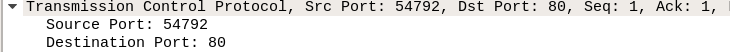

1- Lanzamos el sniffer wireshark, realizamos una petición web y localizamos el HTTP de la página que hemos buscado.
2- ¿Qué protocolos de transporte, red y enlace utiliza HTTP?
HTTP usa como protocolos: Ethernet II, IPv4 (en mi caso) y TCP.
3- ¿Qué puertos están implicados en la capa de transporte?
Los puertos implicados son:
54792 como destino (en mi caso) y el 80 como destino.

¿Qué otros datos puedes obtener de esta capa?
También podemos obtener la encapsulamiento del anterior protocolo (HTTP) en la sección TCP payload.
4- ¿Cuáles son la direcciones IP implicadas en dicha petición?¿A quién corresponden?
Las direcciones IP implicadas son: la de mi equipo, en este caso 192.168.18.93 como origen y la de el servidor HTTP, en este caso 192.168.18.3 (cisco/~juangu) como destino.
¿Qué otros datos puedes obtener de esta capa?
Se puede obtener la versión del IP en este caso IPv4
5-¿Cuáles son la direcciones LAN implicadas en dicha petición?¿A quién corresponden?
Las LAN implicadas son: De destino (servidor): bc : ae : c5 : 5e : 39 : fe y de origen (mi equipo): a0 : d3 : c1 : 32 : 5f : 2a
¿Qué otros datos puedes obtener de esta capa?
La versión de la IP (IPv4)
Calcula el tamaño del payload de cada capa.
TCP= 328b
IP= 380b – 20b = 360b
6- ¿Qué protocolo se utiliza HTTP/1.0 o HTTP/1.1?
Se utiliza el protocolo HTTP/1.1
7- Filtrando TCP, busca el acuerdo en tres bandas entre cliente y servidor. Interprétalo.
El acuerdo a tres bandas son los tres anteriores protocolos TCP los cuales: El primero inicia la conversación el cliente al servidor, el segundo el servidor responde al cliente para hacerle saber que está disponible y el tercero abre finalmente la conexión/conversación del cliente y el servidor.